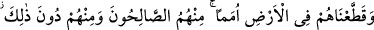
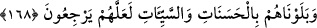

(Yâfiî’nin Ravdu’r-rayyâhîn adlı eserinde böyle geçmektedir).
168. Onları (yahudileri) gurup gurup yeryüzüne dağıttık. Onlardan iyi kimseler
vardır, yine onlardan bundan aşağıda olanları da vardır. (Kötülüklerinden) belki
dönerler diye onları iyilik ve kötülüklerle imtihan ettik.
“Onları” İsrâiloğulları’nı “yeryüzüne grup grup dağıttık.” Onları gruplara ayırarak
her birini yeryüzünün bir bucağına attık. Yeryüzünün her bir bölgesinde onlara
rastlamak mümkündür. Hakkı kabul etmeyip ondan yüz çevirdikleri için kendilerine bu
ceza verilmiş, böylece tekrar bir araya gelip güç ve kuvvet sahibi olmaları
engellenmiştir. “Onlardan kimileri iyi kimselerdi,” Bu gruplardan, Mûsâ (a.s.)’ ın
dinine göre yaşayan sâlih kimseler vardır. “kimileri de öyle” yani iyi kimseler “değil.”
yani bu iyi kimselerden daha aşağı, derece bakımından onlardan düşük kimseler de
vardır. Bunlar, onların kâfîrleri ve fasıklarıdır.
“Belki” içinde bulundukları küfür ve ısyanlarından “dönerler” yaptıklarına son
verirler “diye onları iyilikler ve kötülüklerle” bazen bolluk ve afiyet kapısını açarak
nimetlerle, bazen de kıtlık ve zorluk kapısını aralayarak sıkıntılarla “sınadık.” onlara,
imtihan edip deneyen kimsenin yaptığı muameleyi yaptık. Çünkü hem iyilikler, hem de
kötülükler (bela ve musibetler) insanı taata davet eder. İyilikler, taata teşvik için;
kötülükler de masiyetlerden korkutup sakındırmak içindir.
Kâşifî demiştir ki: Onlar nimete şükretmeleri gerektiği halde kibirlenip böbürlendiler
ve “Allah fakirdir, biz zenginiz” (Âl-i İmran, 3/181) dediler. Sıkıntı içinde iken
sabretmeleri gerekirdi, küfre başladılar ve “Allah’ın eli bağlıdır.” (el-Mâide, 5/64)
dediler. Mihenk taşına vurulduklarında ayarlarının tam olduğunu gösteremediler.
Ne güzel olur, deneme taşı ortaya konsa
İçinde sahtecilik/ihanet olanın yüzü kararır
et-Te’vîlâtü’n-Necmiyye’de şöyle denilmektedir: “Biz onları iyiliklerle” yani İblis’in
durumunda olduğu gibi taatlarının çokluğu, onlara güvenmek ve onlarla gururlanmakla
“ve kötülüklerle” yani Âdem (a.s.)’ın durumunda olduğu gibi masiyetlerle, onları görüp
pişman olmakla, onlardan tevbe etmekle Rab’lerinden korkup haşyet duymakla
“sınadık” Nitekim Âdem (a.s.) hata yaptıkdan sonra Allah’a yönelip: “Ey Rabb’imiz,
biz kendimize zulmettik...” (el-A‘râf, 7/23) demiştir.